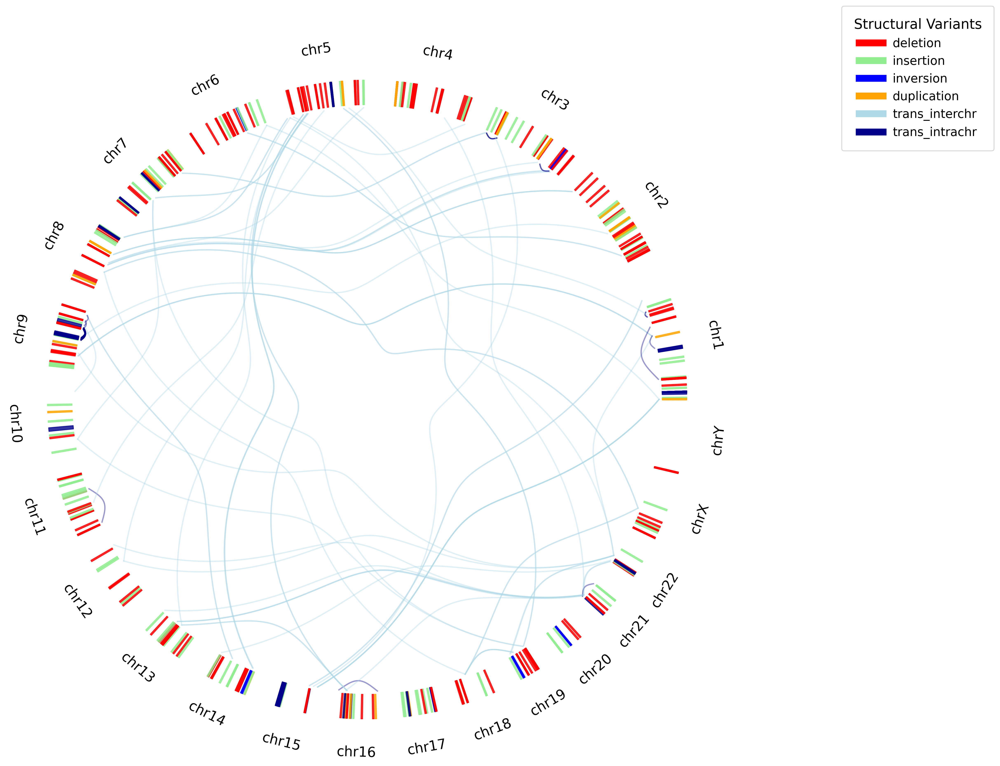
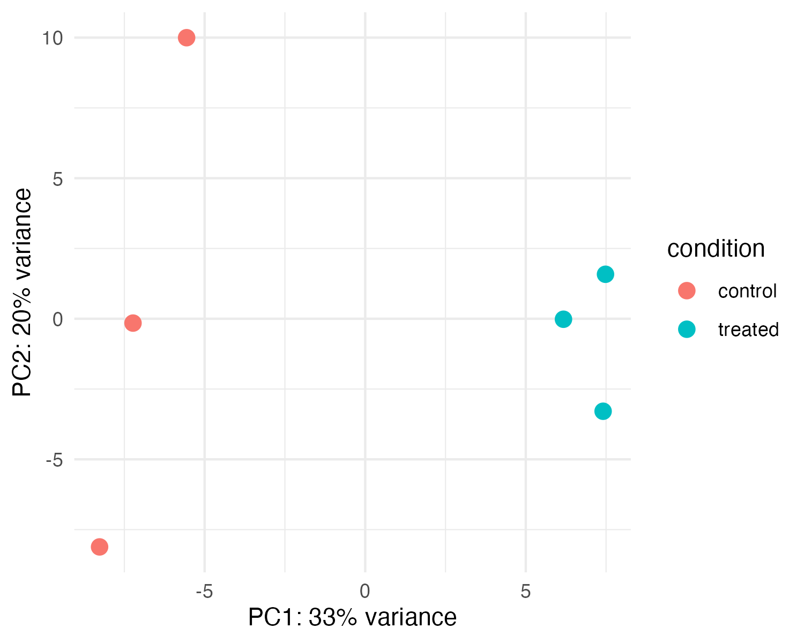
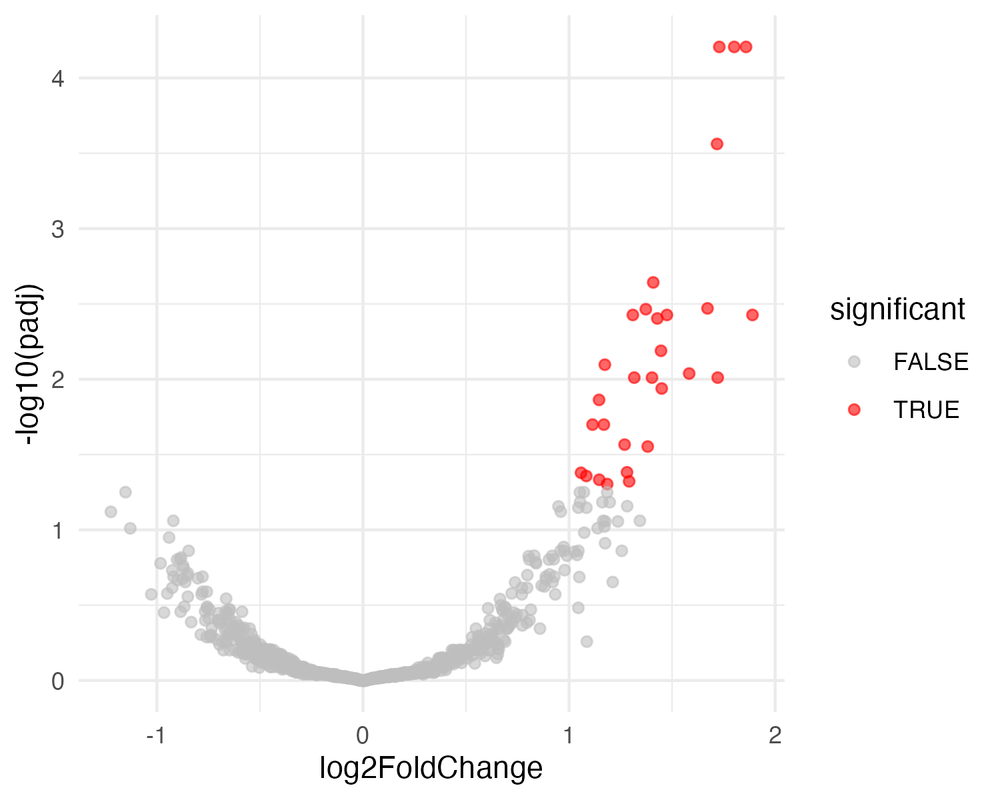

Featured Projects
IdeOGM: Open-Source Circular Ideogram Visualization for Optical Genome Mapping
An open-source Python visualization suite designed for the rapid and customizable generation of high-resolution circular ideograms directly from Bionano Optical Genome Mapping (OGM) SMAP tabular data exports. Tailored for structural variant analysis in soft tissue and bone tumors.

Differential Expression Mini-Analysis (Simulated RNA-seq)
This pipeline simulates RNA-seq count data in Python using a negative binomial model, then applies DESeq2 in R for normalization, differential expression analysis, and exploratory visualization. Emphasizes reproducibility, statistical modeling, and clean Python–R integration without external data dependencies.
- Python-based simulation of RNA-seq count data with known differential expression
- R/DESeq2 normalization, variance stabilization, and differential expression testing
- PCA and volcano plot visualizations for exploratory analysis
- One-command execution with automatic dependency setup (macOS/Linux)


BTN1A1 Multi-Omics Characterization
A comprehensive bioinformatics analysis of BTN1A1 integrating genomics, transcriptomics, protein structure prediction, evolutionary conservation, and regulatory landscape annotation. Synthesizes public datasets and computational tools to generate a research-grade multi-omics gene profile.
- Annotated BTN1A1 gene structure, isoforms, SNPs, paralogs, and orthologs
- Predicted promoter architecture, transcription factor motifs, and regulatory elements
- Modeled protein domains, Ig-like structures, signal peptide, and transmembrane topology
- Evaluated expression across tissues (GTEx) and in breast cancer (GEO GSE15852)
- Integrated ENCODE histone marks and DNase-seq to assess regulatory activity
- Performed multi-species conservation analysis using BLAST, FASTA, and MSAs
Other Projects
Data Structures Projects
Computer science projects demonstrating algorithmic thinking and clean coding practices.
Organic Chemistry II – Special Topics Research Lab
Biomedical Humanities Projects
- Ethical Implications of Clinical Responses to Patients Presenting with Suicidal Ideation (Capstone Literature Review)
- Feasibility of Pharmacogenomics as Standard Practice in Psychiatric Healthcare (Feasibility Report)